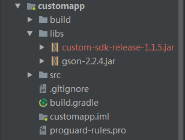
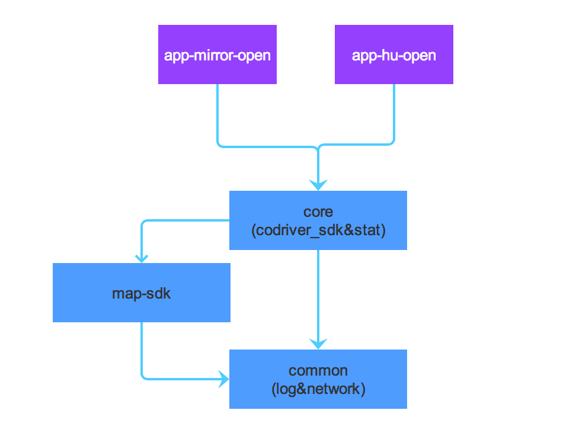
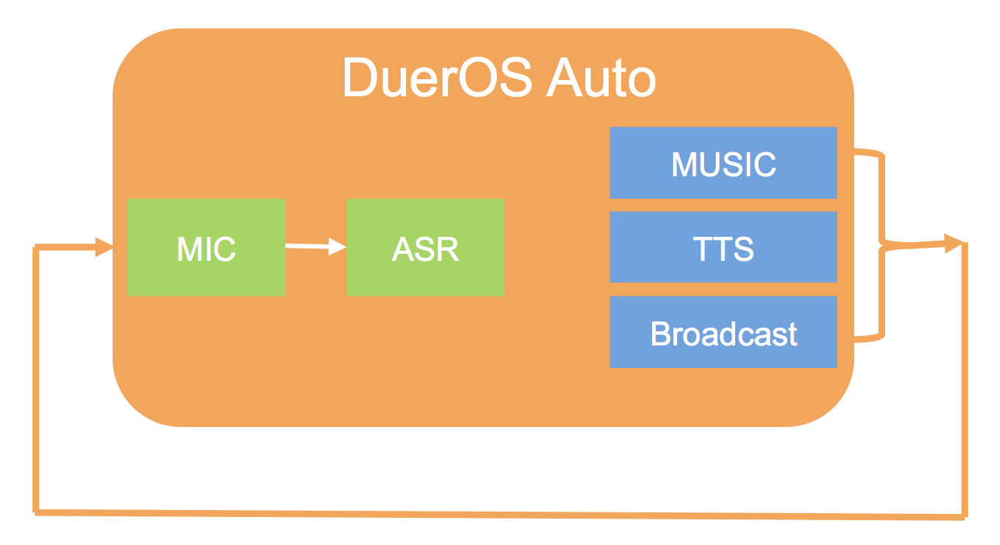
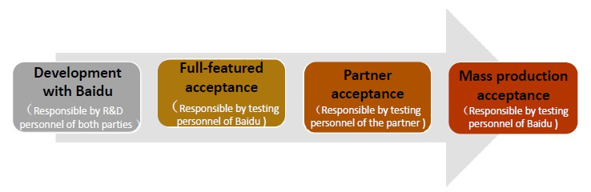

Baidu DuerOS Auto user guide
All rights reserved, infringement will be investigated
Contact email：dueros_feedback@baidu.com
Introduction
What is DuerOS auto
Baidu DuerOS is a conversational artificial intelligence system launched by Baidu, which has more than 70 functions and can support all kinds of hardware equipment. Baidu DuerOS auto is an integrated voice interaction solution using intelligent voice for human-machine interactions, aimed at web-connected cars, and based on Baidu’s voice technology and natural language processing technology and other AI technologies.
Baidu DuerOS Auto has four main functions: voice interaction, telephone, music and navigation. In the course of driving, drivers can use the navigation, music, telephone and other functions through voice command at any time. It can free drivers from the tedious and complex driving program, make the driving safer, more convenient and economical. With the help of many O2O ecosystems connected by Baidu, drivers can also get car services such as parking, refueling and maintenance.
This document is a detailed guide about how to integrate the voice interaction of DuerOS Auto, which elaborates on the implementations of hardware, systems and software, especially the voice interaction integraition for the partners when integrating DuerOS auto from the HU side.
How to integrate DuerOS Auto
DuerOS auto does not support personal developers to integrate it temporarily. At present, DuerOS auto has already published Andriod system solution and online cloud API service. Other system solutions such as Linux, QNX, IOS haven't been supported yet.
DuerOS auto currently supports open integration by OEM, HU solution provider, chip-makers and carrier operators ( hereinafter referred to as DuerOS partners). The integrating process includes:
- Business communication：DuerOS partners contact baidu business(iov-hezuo@baidu.com),for the contract signing of NDA
- Release package acquisition：after completing the business process, DuerOS partners can obtain the download address of DuerOS Auto Release package.
- Integratin：once obtained the SDK, users can integrate adaptation according to the documents and their own requirements. After completing the integration, DuerOS partners shall conduct acceptance inspection in accordance with the Acceptance documents provided by baidu.
- Baidu acceptance：after the acceptance of DuerOS partners, users should mail pre - production equipment to Baidu, then Baidu conduct acceptance. The equipment which passed Baidu acceptance will be authorized, and obtain issued signatures and certification. Please contact Baidu business for mailing address.
- Mass production release: DuerOS partners are responsible for the release. Baidu can participate in PR and other work appropriately.
In the following cases, please contact baidu business(iov-hezuo@baidu.com)for confirmation:
1.For front loading plants, which require closer R&D and coupling in order to achieve better results.
2.There is a custom demand.
What is contained in the release package
All the DuerOS partners can get the DuerOS auto release package after signing the NDA agreement with Baidu Business(iov-hezuo@baidu.com)
DuerOSThe release package mainly contains 3 APKs, 1 SDK, document and sample code.
APK directory
This directory contains 3 APKs:
- DuerOS_Auto_*.*.*_Release.apk：core module of voice interaction，which is mandatory for DuerOS operation
- DuerOS_CarRadio_*.*.*_Release.apk：eco-radio of voice content, combined with voice interaction to provide massive voice content, such as songs, operas, broadcasts, etc.
- DuerOS_MapAuto*.*.*_Release.apk：auto Baidu map.
SDK directory
custom-sdk-release-*.*.*.jar: SDK provided by DuerOS，users can communicate with DuerOS through this SDK, to implement various custom function.
Doc directory
This directory mainly contains 3 documentations:
- Integrate guide.HTML: contains the frameworks, strategies, API and notes of DuerOS, which is the main references provided to developers.
- Voice instruction set.xlsx: sample instruction set recommended by DuerOS currently.
- Api document: contains all the Class and Interface Declarations.
Demo directory
It is a subbranch of open source code of Baidu Apollo Open Source Project, the catalog contains following open source code:
- DuerOS CustomAPP code：mainly contains how to use SDK to develop the user’s own applications to communicate withDuerOS.
Recommended software and hardware configuration
In order for DuerOS to run well on your device, we recommend the device configuration as follows.
| Head Unit Specs | Recommended Requirement |
|---|---|
| CPU | Cortex A9 dual cores、 1.2GHz |
| RAM | 2GB |
| NETWORK | 3G、4G |
| STORAGE | 8GB |
| TELEPHONE | BLUETOOTH 4.0 or beyond |
| Mic Input | Support echo cancellation, SNR > 10dB, 16bit, 16KHz, mplitude ∈ (2000、 30000) |
| OS | Android 4.1 or beyond |
| GPS | GPS、A-GPS |
Overall framework
DuerOS auto framework mainly contains 3 aspects: hardware platform layer, core layer, third party service and content (such as music, navigation, map and FM application). The main structure as shown in the diagram below:

The core module is the voice module and the communication module. The voice module obtains the user's input, interacts with the server to identify and parse the user's voice, and then send the result of semantic parsing to the instruction module to generate the corresponding instruction, and pass it to the communication module. Through the IPC, the instructions are passed to third party services or contents to be executed, and the feedback of execution results and data will be sent to the communication module and transmitted to the UI layer for display. Voice module as the core module of the client, mainly includes the voice engine management, the custom wake-up words, the custom direct command words, the custom off-line instruction, the third party recording, the echo cancellation and noise suppression, etc. In addition, the client also needs to support statistical event tracking, traffic radio, OTA upgrade, and adjust strategies according to the dynamic configuration of server etc.
The voice engine currently uses Baidu's own voice recognition engine, with voice acquisition, voice preprocessing, online identification, off-line identification and other functions, and the accuracy of recognition is as high as 97%. The voice broadcast uses Baidu's own TTS engine, which currently supports the configuration of language speed, tone and volume, supports the TTS broadcast service of standard/emotional voice of male and female, supports the combination of online and off-line. Besides using Baidu's own voice SDK, the voice module may also consider supporting the demand of the third party voice solutions.
DuerOS auto has been deeply integrated with Baidu automobile map, trying to provide the best voice and navigation interaction experience for users. In terms of UIUE, DuerOS auto adopts user-friendly induced interaction, supports custom UI、NLP interface display and flexible multi-resolution adaptation scheme,etc.
The overall scheme of the DuerOS auto needs to correlate with platform, On the one hand, the SDK, Src Code and Demo should be sent to solution provider、Tier One or OEM for integrated development, as well as voice initialization interface、custom UI 、voice wake-up and configuration of direct command words and other functions. On the other hand, the SDK should be provided to third party services and contents developers for integration. After recognizing and parsing the voice of the user, the core module of the DuerOS generates the command instruction and sends it to third party for processing and execution. At the same time, the third party can also transmit information about execution results and data to the core module through the related interfaces provided by SDK.The overall framework of DuerOS auto core module integrated voice service (voice recognition and semantic parsing), communication module (communication with Custom APP), and the communication between third party services or contents as shown below:

Integrate DuerOS Auto
If you want to communicate with DuerOS through SDK, firstly you need to do the project configuration and initialize the SDK. Once these two steps have completed, you can interact with DuerOS through SDK and and develop the custom function.
Project configuration
Import custom-sdk.jar and gson-2.2.4.jar to CustomApp project.

Refer to CustomAppDemo project，add the following code into AndroidManifest.xml：
<uses-permission android:name="android.permission.RECEIVE_BOOT_COMPLETED"/>
<service android:name="com.baidu.che.codriversdk.PlatformService">
</service>
<receiver android:name="com.baidu.che.codriversdk.BootReceiver">
<intent-filter>
<action android:name="android.intent.action.BOOT_COMPLETED"/>
<action android:name="com.baidu.che.codrivercustom.START"/>
</intent-filter>
</receiver>Initialize the SDK
Initialize it in the Application class onCreate () function.
CdConfigManager.getInstance().initialize(getApplicationContext(), new InitListener() {
@Override
public void onConnectedToRemote() {
// Successfully connected to DuerOS：Can call a custom interface
// Initializing various modules for function customization here
// It is recommended to put all the sdk configuration related things here
// Do not repeat the configuration, otherwise it may cause some unknown problems
}
@Override
public void onDisconnectedToRemote() {
// Disconnected from DuerOS: You can do some cleanup
}
});Sleep & Wakeup
Sleep
The sleep device can call this interface to turn off other related APK and functions, so as to reduce consumption. At this time the voice wakeup function is invalid.
CdConfigManager.getInstance().notifySystemSleep();Wakeup
The wakeup device can call this interface, open DuerOS wakeup and related functions. At this time the voice wakeup function takes effect.
CdConfigManager.getInstance().notifySystemWakeUp();Voice recognition ASR
The CdAsrManager class is responsible for managing ASR related functions, and get a singleton via CdAsrManager.getInstance().
Add/Delete custom wakeup words
addWakeUpWord method to set custom wake-up words, example code is as follows：
java
CdAsrManager.getInstance().addWakeUpWord("Hellow Baidu auto"); //Add custom wakeup words
CdAsrManager.getInstance().removeWakeUpWord("Hellow Baidu auto") //Delete custom wakeup words
You can call the interface multiple times to add multiple wakeup words, but we recommend the wakeup words no more than three, so as to achieve the best wakeup effect.
Note: Custom wakeup words have been supported, if needed, please contact Baidu business(iov-hezuo@baidu.com)
Dialog flow Interface control
Opening and closing dialog flow can be achieved through CdAsrManager.getInstance().openDialog()and closeDialog().
CdAsrManager.getInstance().setAsrTool(new CdAsrManager.AsrTool() {
@Override
public void onVrDialogShow() {
LogUtil.d(TAG, "Show dialog flow interface");
}
@Override
public void onVrDialogDismiss() {
LogUtil.d(TAG, "Dismiss dialog flow interface");
}
});Register command words
The dynamic registration of command words is used to customize the commands in the voice dialog flow after wake-up.
The sample code for registering command words is as follows:
CdAsrManager.VrCommand vrCommand = new CdAsrManager. CdAsrManager.VrCommand() {
@Override
public void onCommand(String type, String cmd) {
LogUtil.e(LOG_TAG, "onCommand(): type=" + type + " cmd=" + cmd);
}
@Override
public String getId() {
return "vr_cmd_test";
}
};
vrCommand.addCommand("run", "jog", "sprint");
vrCommand.addCommand("play", "basketball", "football");
CdAsrManager.getInstance().registerVrCmd(vrCommand);Important note: When the custom command words and built-in command words conflict, the custom logic will take precedence.
Examples of unregistered (cancel) command words are as follows:
CdAsrManager.getInstance().unRegisterVrCmd("vr_cmd_test");Other API Descriptions
| API | description |
|---|---|
| disableAsr | Close voice function（Turn off wakeup, release MIC） |
| enableAsr | Open voice function（wake up, use MIC） |
| openFullBargin | Open barge in function |
| closeFullBargin | Close barge in function |
| openSceneCmd | Open direct command words |
| closeSceneCmd | Close direct command words |
| openOneShot | Open oneShot(Temporarily unavailable) |
| closeOneShot | Close oneShot(Temporarily unavailable) |
Explanation: oneshot: The user can finish the wake-up words and instructions together, without waiting for wake-up, and then give the instructions; for example: "Xiao Du Xiao Du open the navigation".
speech synthesis TTS
com.baidu.che.codriversdk.manager.CdTTSPlayerManager is the class object which controls TTS，TTS broadcast can be used once the singleton has been obtained. The detailed API description is as follows：
| Key API | description |
|---|---|
| play(String text) | Play synthetic speech |
| playWithUtteranceId(String text, String utteranceId) | Play synthetic speech，corresponding identification ID with text |
| playAndShow(String text, PlayAndShowListener listener) | Play synthetic speech and show it, with callback after playing is finished |
| playAndShow(String text) | Play synthetic speech and show it |
| setTTSPlayerListener(TTSPlayerListener listener) | Set all listeners of TTS broadcasts |
| setTTSPlayStatusListener(TTSPlayStatusListener listener) | Set the listeners who currently broadcast the TTS via the “play” or “playWithUtteranceId” interface |
| stop() | Stop playing |
| switchSpeak(SpeechType type) | Set speech type，see the following table for specific speech type |
| setAudioStreamType(int mType) | Set StreamType of TTS |
Speech type supported by DuerOS currently
| Types | Enum-type |
|---|---|
| Standard male voice | NORMAL_MALE |
| Standard female voice | NORMAL_FEMALE |
| Emotional male voice | EMOTION_MALE |
| Emotional female voice | EMOTION_FEMALE |
Navigation function
Initiate navigation according to POI point information
PoiModel mPoiModel = new PoiModel();
mPoiModel.latitude = 22.524674; // Required
mPoiModel.longitude = 113.943024; // Required
mPoiModel.poiName = "Baidu International Building, Shenzhen"; // Optional
mPoiModel.poiAddress = "Baidu International Building, Nanshan District Xuefu Road East, Shenzhen" // Optional
boolean isSendSuccess = CdNaviManager.getInstance().sendStartNaviCommand(PoiModel mPoi);Set default navigation app
//Currently available maps are:
Baidu maps: CdNaviManager.NaviApp.Baidu
AMAP map Head unit: CdNaviManager.NaviApp.Amap
AMAP map in Back Mirror : CdNaviManager.NaviApp.Amap_Lite
CdNaviManager.getInstance().setDefaultNaviApp(CdNaviManager.NaviApp.Baidu);Get map navigation status
CdNaviManager.getInstance().setNaviTool(new CdNaviManager.NaviTool() {
@Override
public void isMapInUse(NaviStatus status) {
//Callback enumeration values of map navigation status. NaviStatus:status
}
});
public enum NaviStatus implements INoProguard {
/**
* Enter navigation
*/
Navi_Front,
/**
* Exit navigation
*/
Navi_Background,
/**
* Enter the map
*/
Navi_App_Launcher,
/**
* Exit the map
*/
Navi_App_Exit,
/**
* Start navigation
*/
Navi_Start,
/**
* Exit navigation
*/
Navi_EXIT,
/**
* Start cruise
*/
Cruise_Start,
/**
* End cruise
*/
Cruise_End;
}Set day / night mode of the map
//true :day false :night
CdNaviManager.getInstance().setDayOrNightMode(true);Try to trigger or cancel night mode of the map
Note: It only takes effect when the map is in automatic mode (if the map has been enforced to set the day/night mode, none of the following methods will take effect)
//true: trigger night mode false: cancel night mode
CdNaviManager.getInstance().triggerNightMode(true);
Judge if the map is in navigation
CdNaviManager.getInstance().isInNavi(new CdNaviManager.IsNaviCallback() {
@Override
public void isInNavi(boolean isNavi) {
ToastUtils.show(isNavi ? "navigating" : "not navigating");
}
});Set the address of home/office
CdNaviManager.PoiAddress address = new CdNaviManager.PoiAddress();
address.name = "xx";
//CdNaviManager.AddressType.office.name() as office
address.type = CdNaviManager.AddressType.home.name();
address.address = "xx";
address.longitude = xx;
address.latitude = xx;
CdNaviManager.getInstance().setAppointAddress(address);Get the address of home/office
//CdNaviManager.AddressType.office / home
CdNaviManager.getInstance().getAppointAddress(CdNaviManager.AddressType.home,
new CdNaviManager.AddressCallback() {
@Override
public void onResultAddress(CdNaviManager.PoiAddress address){
ToastUtils.show("Home address = " + address.name);
}
});Navigate home/office
//CdNaviManager.AddressType.office / home
CdNaviManager.getInstance().sendStartNaviHomeOrAddress(CdNaviManager.AddressType.home);Integrate Bluetooth phone
Set BlueTooth function
Use CdBlueToothManager.getInstance().setBlueToothTool(BlueToothTool tool) to set a Bluetooth tool instance，to open system Bluetooth page, then use this instance to download contacts and achieve other functions，The sample code is as follows:
/**
* Set BlueTooth Tool
*/
CdBlueToothManager.getInstance().setBlueToothTool(new CdBlueToothManager.BlueToothTool() {
@Override
public void openBlueToothView() {
LogUtil.d(TAG, "Open the Bluetooth connection interface");
// TODO: Open the Bluetooth connection interface
}
@Override
public void openContractDownloadView() {
LogUtil.d(TAG，"Open the phone book download interface");
// TODO: Open the phone book download interface
}
});BlueToothTool API description
| API | description |
|---|---|
| openBlueToothView() | Phone someone in voice，DuerOS call When the status is Not Connected to Bluetooth，aim to open Bluetooth page，and OEMs need to override the implementation method inside. |
| openContractDownloadView() | Phone someone in voice，DuerOS call when the status is Connected to Bluetooth but without contacts，aim to open the contacts page，OEMs need to override the implementation method inside. |
Set phone function
Use a new PhoneTool instance of CdPhoneManager.getInstance().setPhoneTool(PhoneTool tool) to make phone calls，then it can be called here when dialing.The sample code is as follows:
CdPhoneManager.getInstance().setPhoneTool(new CdPhoneManager.PhoneTool() {
@Override
public void dialNum(String number) {
LogUtil.d(TAG, "dial：" + number);
// TODO: dial
}
});Bluetooth phone status synchronization
Because Head unit systems of different OEMs are different, the interfaces for obtaining the Bluetooth status are different. Executing example code can notify the connection status of Bluetooth to the DuerOS voice module.
java
//Sample codes:
CdBlueToothManager.getInstance().onNotifyBTStatus(BtStatus status)
CdBlueToothManager.BtStatus define the following Bluetooth status：
| Macro | Parameter values(status) | Remark |
|---|---|---|
| BT_DISCONNECTED | 0 | Disconnect |
| BT_CONNECTING | 1 | Connecting |
| BT_CONNECTED | 2 | Connected |
| BT_DISCONNECTING | 3 | Disconnecting |
| BT_CANCELLING | 4 | cancellinng |
| BT_CANCELLED | 5 | cancelled |
| BT_PAIRED | 6 | Paired |
| BT_NOPAIR | 7 | Nopair |
Notify phone book about authorization status
//sample codes:
CdBlueToothManager.getInstance().onNotifyBTPhoneStatus(BTPhoneStatus status)
Execute sample codes,Can notify DuerOS voice module about phone book authorization status，CdBlueToothManager.BTPhoneStatus defines the following phone book authorization status：
| Macro | Parameter values(status) | Remark |
|---|---|---|
| BT_PHONE_NO_AUTHORIZED | 0 | No authorized |
| BT_PHONE_AUTHORIZING | 1 | Authorizing |
| BT_PHONE_AUTHORIZED | 2 | Authorized |
| BT_PHONE_REQUESTING | 3 | Requesting |
| BT_PHONE_RESERVED_1 | 4 | Reserved text |
| BT_PHONE_RESERVED_2 | 5 | reserved text |
| BT_PHONE_CANNOT_AUTHORIZED | 6 | cannot be authorized |
Notify phone book download status
//sample codes:
CdPhoneManager.getInstance().onNotifyPhoneStatus(PhoneDownload Status status)```
CdPhoneManager.PhoneDownloadStatus defines the following phone book download status：
| Macro | Parameter values(status) | Remark|
| :-- | :-------------: | :--- |
| CONTACTS\_NO_DOWNLOADED | 0 | Default status |
| ACTION\_PBAP\_DOWNLOAD_SUPPORT | 1 | Successful integrate to the configuration file |
| CONTACTS\_DOWNLOAD_REQUEST | 2 | Contacts download request |
| CONTACTS\_DOWNLOAD_STARTED | 3 | Contacts download start |
| CONTACTS\_DOWNLOAD_PROGRESS | 4 | Contacts download progressing|
| CONTACTS\_DOWNLOAD_COMPLETE | 5 | Contacts download completed |
| CONTACTS\_UPDATE_READY | 6 | Contacts ready to update |
| CONTACTS\_UPDATE_COMPLETE | 7| Contacts update completed |
| CALLLOGS\_DOWNLOAD_STARTED | 8 | Call logs download start |
| CALLLOGS\_DOWNLOAD_PROGRESS | 9 | Call logs download progressing |
| CALLLOGS\_DOWNLOAD_COMPLETE | 10 | Call logs download completed |
| OTHER | 11 | Others |
### Synchronize phone contact List data
```java
//Initialize the Model
CdPhoneManager.PhoneContactList mPhoneModel = new CdPhoneManager.PhoneContactList();
//Add names and phone numbers of every contacts
//@note contacts with more than one phone number are regarded as different contacts.
mPhoneModel.addContact("San Zhang", "13888888888");
mPhoneModel.addContact("San Zhang", "13899999999");
mPhoneModel.addContact("Si Li", "13800000000");
//transfer data after setting is completed：
CdPhoneManager.getInstance().sendPhoneBookData(mPhoneModel);Integrate Multimedia function
To implement the commands of “open radio、open FM、open AM、open USB music、open CD music、open AUX music、open Ipod music、open Bluetooth music...” ,DuerOS provides a unified interfacesetMediaTool for SDK developers to use, fitting the multimedia interfaces provided by each Head unit system.
CdMediaManager.getInstance().setMediaTool(MediaTool tool) can be used to set multimedia tool instance, By implementing each interface in this instance，the functions of“open radio、open FM、open AM、open USB music、open CD music、open AUX music、open Ipod music、open Bluetooth music...” can be achieved.
//Sample codes：
CdMediaManager.getInstance().setMediaTool(new MediaTool() {
@Override
public void openRadio() {
// TODO Auto-generated method stub
}
@Override
public void closeRadio() {
// TODO Auto-generated method stub
}
@Override
public void openMyMusic() {
// TODO Auto-generated method stub
}
@Override
public void openMusicUsb() {
// TODO Auto-generated method stub
}
@Override
public void openMusicIpod() {
// TODO Auto-generated method stub
}
@Override
public void openMusicCd() {
// TODO Auto-generated method stub
}
@Override
public void openMusicBt() {
// TODO Auto-generated method stub
}
@Override
public void openMusicAux() {
// TODO Auto-generated method stub
}
@Override
public void openFMChannel(String arg0) {
// TODO Auto-generated method stub
}
@Override
public void openFM() {
// TODO Auto-generated method stub
}
@Override
public void openAMChannel(String arg0) {
// TODO Auto-generated method stub
}
@Override
public void openAM() {
// TODO Auto-generated method stub
}
@Override
public void playCollectionFM() {
// TODO Auto-generated method stub
}
@Override
public void collectFMChannel() {
// TODO Auto-generated method stub
}
@Override
public void cancelFMChannel() {
// TODO Auto-generated method stub
}
@Override
public void searchAndRefreshFMChannel() {
// TODO Auto-generated method stub
}
});Integrate music function
For the music demand, DuerOS fits three music players：
1.Baidu Car Radio: Provided by baidu, contains a large number of legal copy music resources.
2.Kuwo music player:Baidu cooperates with Kuwo music and contains a lot of Kuwo music resources
3.The OEMs' own player: if the OEMs has its own music resources, it can be directly adapted by DuerOS to reach the effect of voice-activated player.
Due to digital copyright issues, please consult Baidu iov business:iov-hezuo@baidu.com for official mass production of music resources.
Default music player settings
OEMs can select the default player interface through the following interface
CdConfigManager.getInstance().setMusicType(MusicType musicType);MusicType：
| Type | Enum-type |
|---|---|
| Custom player | CUSTOM_MUSIC |
| Baidu Car Radio | BAIDU_RADIO |
| QQ music | QQ_MUSIC |
| Kuwo music | KUWO_MUSIC |
For the OEMs' own player，CdMusicManager.getInstance().setMusicTool(MusicTool tool) should be used to set the music tool instance,so that to control the this player, the sample code is as follows：
CdMusicManager.getInstance().setMusicTool(new MusicTool() {
@Override
public void searchMusic(String arg0, String arg1,
OnSearchResultListener arg2) {
//If do not callback OnSearchResultListener, it will still use Baidu Car Radio to deal with this search results.
// TODO Auto-generated method stub
}
@Override
public void playMusic(MusicModel arg0) {
// TODO Auto-generated method stub
}
@Override
public void playList(List<MusicModel> arg0, int arg1) {
// TODO Auto-generated method stub
}
});Default music player startup settings
Notify DuerOS whether to launch the playing music player to the foreground when control music(pause, next, previous) next time.（Defaults do not launch the music player）
// true Launch false Not launch
// Note: This interface takes effect after being called once and it does not need to be called repeatedly.
CdPlayerManager.getInstance().notifyNeedLaunchApp(boolean needLaunch)Integrate Player function
The OEMs can set the player tool through CdPlayerManager.getInstance().setPlayerTool(PlayerTool tool)，By implementing each interface of this instance, functions such as switching playing mode, switching the previous song, switching the next song, playing, pausing, and exiting can be realized.These functions are common behavior. Taking pause as an example, it may be pause playing music, or it may be pause playing FM, AM and so on. The sample code is as follows
CdPlayerManager.getInstance().setPlayerTool(new PlayerTool() {
@Override
public void switchMode(int mode) {
// TODO Auto-generated method stub
}
@Override
public void prev() {
// TODO Auto-generated method stub
}
@Override
public void play() {
// TODO Auto-generated method stub
}
@Override
public void pause() {
// TODO Auto-generated method stub
}
@Override
public void next() {
// TODO Auto-generated method stub
}
@Override
public void exit() {
// TODO Auto-generated method stub
}
});Among them swithMode(int mode) supports three modes，in PlayerTool：
| Macro | Parameter values | Comments |
|---|---|---|
| PlayerTool.MODE_SINGLE_LOOP | 0 | single loop |
| PlayerTool.MODE_RANDOM | 1 | random play |
| PlayerTool.MODE_FULL_LOOP | 2 | full loop |
Description: music search (such as waking up Xiao Du, "I want to listen to Andy Lau's ice rain"), the results will be played by the default player（call setMusictype()). But control command（such as "next，previous, pause..."），will launch the recently used player to execute the command.
Manually control the player
In addition to playing the music by voice control through PlayTools interface,the player with sdk can also be controlled manually, to achieve functions such as previous song, next song, pause, play, exit, loop mode and change songs. ```java CdPlayerManager.getInstance().play();// play CdPlayerManager.getInstance().pause();// play CdPlayerManager.getInstance().stop();// play CdPlayerManager.getInstance().next();// play CdPlayerManager.getInstance().prev();// play CdPlayerManager.getInstance().change();// play CdPlayerManager.getInstance().switchMode(int mode);// play
###Notify DuerOS the type of player currently being played
```java
public void notifyInUse(CdConfigManager.MusicType musicType)Description： The local player cancall this interface and set the value of musicType to be MusicType.CUSTOM_MUSIC, to notify the duerOS to send the commands of player control to the local player.
Integrate System Control Function
Integrate vehicle control function
OEMs can set system tools through CdSystemManager.getInstance().setSystemTool(SystemTool tool) to switch air conditioners, adjust temperature, switch windows, and adjust system volume. Sample code is as follows:
CdSystemManager.getInstance().setSystemTool(new SystemTool() {
@Override
public boolean reduceFeature(String feature, String value) {
// TODO Auto-generated method stub
return false;
}
@Override
public boolean operateFeature(String feature, String value) {
// TODO Auto-generated method stub
return false;
}
@Override
public boolean openFeature(String feature, String value) {
// TODO Auto-generated method stub
return false;
}
@Override
public boolean minFeature(String feature, String value) {
// TODO Auto-generated method stub
return false;
}
@Override
public boolean maxFeature(String feature, String value) {
// TODO Auto-generated method stub
return false;
}
@Override
public boolean increaseFeature(String feature, String value) {
// TODO Auto-generated method stub
return false;
}
@Override
public boolean closeFeature(String feature, String value) {
// TODO Auto-generated method stub
return false;
}
@Override
public boolean searchFeature(String feature, String value) {
// TODO Auto-generated method stub
return false;
}
});Description：
- Return value：True indicates that the command was successfully executed and the DuerOS dialog flow will be automatically closed; False indicates that the command is not processed.
- If nothing has been done, DuesOS will prompt "command timeout" and exit voice dialog flow after 3s timeout.
The Feature constant is defined as follows:
| Constant Names | Constant Values | Supported methods | Remark |
|---|---|---|---|
| FEATURE_VOLUME | volume | increase/reduce | Increase/reduce volume |
| FEATURE_BLUETOOTH | bluetooth | open/close | open/close bluetooth |
| FEATUREVEHICLELIGHT | vehicle_light | open/close | open/close vehicle lights |
| FEATURE_LIGHT | light | oprate(up/down/max/min) | Adjust screen light |
| FEATURE_WIFI | wifi | open/close | open/close WIFI |
| FEATURE_NETWORK | network | open/close | open/close network |
| FEATURE_SETTING | system_setting | open/close | open/close setting |
| FEATURE_PICTURE | picture | open/close | open/close pictures |
| FEATURENETWORKSHARING | network_sharing | open/close | wifi sharing |
| FEATURE_WIND_FLOW | wind_flow | operate(up/down/high/low/normal) | Adjust the air volume |
| FEATURE_WIND_DIRECTION | wind_direction | operate(next) | next wind direction |
| FEATURE_TEMP | temp | operate(max/min/up/down/cold/hot) | Adjust the air conditioning temperature |
| FEATURE_CLIMATE | climate | open/close | climate system |
| FEATUREAIRSYNC | air_sync | open/close | synchronous mode |
| FEATUREVEHICLEDOOR | vehicle_door | open/close | vehicle door |
| FEATUREVEHICLEBOX | veicle_box | open/close | veicle box |
| FEATURE_AIR_CONDITIONER | air_conditioner | open/close | airconditioner |
| FEATURE_INTERNAL_RECYCLE | internal_recycle | open/close | internal recycle |
| FEATURE_AIR_CLEAN | air_clean | open/close | air clean system |
| FEATURE_DEFROST | defrost | open/close | defrost |
| FEATUREAUTODEFROST | auto_defrost | open/close | auto-defrost |
| FEATURE_MUTE | mute | open/close | open/close mute |
| FEATURESETHEAT | heat | open/close | heat seat |
| FEATURE_HELP | help | - | help |
Integrate driving recorder control function
OEMs can implement the corresponding function through the following sample code
CdCameraManager.getInstance().setCameraTool(new CdCameraManager.DrivingRecorderTool() {
@Override
public void drivingRecorder(DrivingRecorderState drivingRecorderState) {
//drivingRecorderState == DrivingRecorderState.WATCH watch recording
//DrivingRecorderState.START start recording
//DrivingRecorderState.STOP stop recording
}
@Override
public void openCamera(CameraType cameraType) {
//open camera
//cameraType == CameraType.FRONT_CAMERA front camera
//CameraType.INNER_CAMERA inner camera
//CameraType.BACK_CAMERA back camera
}
@Override
public void takePicture() {
//take picture
}
});
1) Sdk send car related information to DuerOS. The sample code is as follows:
CdSystemManager.getInstance().setCarStateListener
(new CdSystemManager.CarStateListener() {
@Override
public void carStateCmd(String feature, String extra) {
//OEMs returns the corresponding value according to the feature
// data format is as follows:
{ code: AIR_TEMPERATURE,
ext: {
ext1: value1
ext2: value2
}
}
CdSystemManager.getInstance().sendCarInfo(data);
}
});
Feature constants are defined as follows:
CarState.AIRTEMPERATURE air temperature
CarState.FUELOIL fuel amount
2) Sdk sends the specific car model to DuerOS, sample code is as follows:
CdSystemManager.getInstance().sendCarModel("Porsche 911");
Integrate electronic manual function (Note: Currently only FAW channels are available)
1) Set the electronic manual to monitor, the code is as follows:
CdCarInfoQueryManager.getInstance().setQueryCarInfoTool(new CdCarInfoQueryManager.QueryCarInfoTool() {
@Override
public boolean answerContent(String feature, String extra) {
// The returned content is the feature, extra field temporarily not effective
return true;
}
});
interface jump
Jump to voice setting interface
CdSystemManager.getInstance().jumpToAsrSetting();Jump to help setting interface
CdSystemManager.getInstance().jumpToHelpSetting();Integrate online update function
Introduction of online update function
The online update module realizes the overall upgrade of all apps in the DuerOS ecosystem through a single download and silent installation. The main process is as follows:
1) Detecting and upgrading the configuration: It has two modes: manual detection by the user and automatic detection by the system. Automatic detection is performed after starting up DuerOS for 30 seconds.
2) Download upgrade packages: Download all applications that need to be upgraded in the DuerOS ecosystem as a form of zip；
3) Silent installation: After the upgrade package is downloaded, DueerOS sends a broadcast, then the Head unit system receives the broadcast and completes the mass silent installation of the apk file under the designated directory.
Functions that need to be developed by Head unit system
1）Receive online upgrade broadcasts sent by DueerOS, broadcast Intent as follows：
Intent intent = new Intent();
intent.setAction("codriver.intent.action.SYSTEM_RESTART");
intent.putExtra("dueros_ota_dir", otaCacheDir);2）Obtain storage directory of the online upgrade installation package through the duerosotadir parameter of the online upgrade broadcast intent, and silent install all the apk files under the directory.；
3）After successful installation, delete all apk files under the online upgrade installation package storage directory and restart Head unit system.
Obtain weather information
can actively retrieve weather information by sending broadcasts.
java
context.sendBroadcast(new Intent("com.hkmc.intent.action.request_weather_update"));
Dueros will send a broadcast containing weather information after receiving the broadcast, registering the following broadcast receivers:
java
IntentFilter intentFilter =
new IntentFilter("com.hkmc.intent.action.weather_update");
context.registerReceiver(mReceiver, intentFilter);
In the broadcast receiver onReceive's Intent, via "com.hkmc.extras.weather.weathercondition" and
"com.hkmc.extras.weather.weathername" can obrain the weather type and the weather name respectively.
In addition, Dueros will update the weather through this broadcast receiver at set intervals.
DuerOS FAQ
Logic problems when playing music
Control command execution logic (open music, previous song, next song...)
Reproduce Steps：
1.Set Baidu Car Radio as the default player, open Baidu Car Radio and Kuwo player, pausing them and place them in the background( (Baidu Car Radio pauses first and Kuwo player pauses after Baidu). 2.After saying command such as "next song, previous song", the system opens Kuwo player to play the next song instead of opening the default player.
Logic description：
In order to maintain the consistency and fluency of the users' music experience, the commands of" previous song, next song, pause..." will be sent to the recently opened player to execute. In the above description of the problem, Kuwo player is the most recently used player, so Kuwo will execute the commands.
Search music execution logic (I want to listen to XXX's XXX)
Reproduce Steps：
1.Set Baidu Car Radio as the default player，open Kuwo player. 2.Give commands "I want to listen to Andy Lau's ice rain". 3.Open Baidu Car Radio to play Andy Lau's Ice Rain，and Kuwo player pause instead of playing.
Logic description：
Searching commands like " I want to listen to XXX's XXX " will be sent to the default player to execute. If you want to use Kuwo player to play, you can use:
java
CdConfigManager.getInstance().setMusicType(MusicType.KUWO_MUSIC)
to set Kuwo player as the default player.There are four enum-type of music types that can be set：MusicType.CUSTOMMUSIC、MusicType.KUWOMUSIC、MusicType.BAIDURADIO、MusicType.QQMUSIC.
Core function command
See details inBaidu DuerOS auto voice instruction set.xlsx
Launcher Open Source Project
Source code github address
Launcher description of Project directory structure
- app-
- headunit-open：launcher Head unit main module
- app-mirror-open：launcher Back Mirror main module
- core：launcher common libraries
- map-sdk：used for sdk encapsulation
- build-app-headunit-open.sh：build script of Head unit launcher
- build-app-mirror-open.sh：build script of Back Mirror launcher
- output：used to store the apk files generated by above build script
Launcher Project Framework
DuerOS Launcher Open source project based on R&D of Android Studio，Use gradle as automated build tools, including 4 modules，core and map-sdk belong to library type，while app-mirror-open and app-headunit-open belong to application type. The dependency relationships of each module are shown below

Specific introduction is as follows:
- core:is the core Library of launcher，The main role is to integrate DuerOS SDK， encapsulate base class library required by launcher，Including screen adaptation, network library (based on OKHttp3), picture library (Fresco), Log tools and other functions.
- map-sdk: The main role is to independently encapsulate the positioning sdk for Head unit launcher to use.
- app-headunit-open: The main module of Head unit launcher. It is used to implement the interaction of Head unit launcher UI.
- app-mirror-open: The main module of Back Mirror launcher. It is used to implement the interaction of Back Mirror launcher UI.
Installation Notes： 1. When installing by pushing in /system/app to cover system Launcher, corresponding so file should be pushed into /system/lib. Corresponding so file can unzip apk file, and replicate and obtain all the so file under lib. 2. Adb install (normal installation) , No special treatment needs to be done.
Note: functions such as Phone and Radio need to be integrated by yourself.
Echo cancellation and noise suppresion（ECNS）
Most voice applications have an unavoidable pain point, that is, the MIC has to record the sound coming from the speaker of the device (abbreviated as the Speaker signal, such as music, TTS, etc.), the sound from device and human voice are sent to the speech engine together as voice recordings, which reduce the recognition rate. At present, mainstream voice technology still cannot automatically distinguish voice from mingled sound signals. In this case, the voice engine always receives mingled signals, which is much less effective than pure voice input.
The voice environment of Auto is much more complicated than the voice environment of mobilephone. For example, in a mobilephone scene, users can use the MIC to record voice, which is close to the mouth and can effectively avoid other interferences, and it is also convenient to turn off the sound manually. However, in the auto scene, the MIC is at least one arm away from the user. To ensure the user's driving safety, it is not applicable to require the users to lower the device speaker volume in order to use voice command.
To meet the demands of different partners, DuerOS has developed two algorithms which are software noise suppression and hardware noise suppression, to meet the demands of different products positioning. According to the current evaluation, the effects of hardware noise suppression solution is better than the effects of software noise suppression solution.
Hardware noise suppression solution
For details, please refer to: Hardware noise suppression solution
Software noise suppression solution
Baidu Software noise suppression solution adopts Acoustic Echo Cancelling (AEC) acoustic echo cancellation technology. This technology originated in the development of telephone communications and VOIP. The following diagram shows a communication system that uses the AEC algorithm. In this example，the acoustic coupling between the microphone and the speaker at the near-end of the communication link produces echoes, which results in significant interference echoes at the far-end. In this case, the running near-end AEC algorithm will suppress echoes and improve system performance.  The basic principles and steps are as follows：
- The voice signal sent to the near-end speaker is sampled as the echo cancellation reference signal Speaker signal.
- Near-end MIC receives voice input as MIC signal
- Correlation analysis for MIC signals and Speaker signals (initial time delay and compare window).
- Treatment of Adaptive filter noise suppression.
The AEC algorithm used by Baidu DuerOS Auto is provided by Baidu's voice technology department. This algorithm has been applied to a variety of car devices and is a high robustness algorithm.
Key dependency
Baidu has already implemented the echo cancellation algorithm, so the key dependency in the engineering phase is how to obtain the Speaker signals. We have two requirements for this signal.：
- When the client is recieving MIC signals, it can also continuously receive the Speaker signals in the same time.
- The MIC signal and the Speaker signals obtained from the bottom layer must be synchronized, and the time delay between the two must be strictly controlled within 400ms.
To obtain a high-quality speaker signals, it is recommended to modify the Linux driver layer or modify the IIS bus (Inter-IC Sound, integrated circuit built-in audio bus) to obtain the Speaker signals. Because only the Linux driver layer or IIS is closest to the Codec hardware, and usually the same Codec chip is used for recording and playing, the same sampling rate will be used. Therefore, in the same sampling period, recieved Speaker signals and MIC signals should be aligned. Strictly speaking, there will be no time difference, which is the key to achieve good performance. If rely on pure software algorithms for dynamic alignment, it is very CPU-intensive and the effect is not guaranteed. The entire technical process is as follows：
- The client opens the recording device and requires the system to do two-channel stereo recording. Taking Android system as an example:
AudioRecord recordInstance = new AudioRecord(audioSource,
RECORD_SAMPLE_RATE_16K,
AudioFormat.CHANNEL_IN_STEREO,
AudioFormat.ENCODING_PCM_16BIT,
DEFAULT_BUFFER_SIZE);- The Linux driver layer or IIS bus layer records after receiving the client call, the recieved MIC signals is put in the left sound channel.
- Meanwhile, the Linux driver layer or the IIS bus layer puts Speaker signals which is sent to the speaker in the right sound channel.
- The client will separate the received stereo data into two signals.
- The client then takes these two signals to AEC module processing.
- After that，the client sends the AEC-processed audio stream to the Baidu voice engine for identification.
integrating process
Cooperative OEMs can evaluate internally whether the Speaker signals can be obtained from Linux driver layer or IIS bus layer. After it is determined to be feasible, a demo can be developed to locally store the MIC signals and the Speaker signals respectively in the form of PCM streams, then send them to Baidu for evaluation. Baidu will verify whether these two files meet the algorithm requirements, and it will be processed by the AEC module, all the signals will be stored for analysis. After Baidu confirms that it is feasible, the cooperative OEMs can implement the modification of the Linux driver layer or the IIS bus layer. In the process of implementation, it is necessary to ensure that the MIC signals is sent to the left channel, and the Speaker signals is sent to the right channel; and when there is no music or TTS playing, null data needs to be sent to the right channel. After completing the implementation, both parties conducted joint testing to optimize the Barge-In results.
SDK-related API
If the OEMs' equipment already meets the above requirements, recording-related features of AEC can be set through the relevant interfaces of the CdRecordManager class. See the following interface description for details.
setRecordType(RecordType type)
Set recording-related features of AEC,sample code is as follows:
//Note: This method takes effect only on the first call, and multiple calls are invalid.
CdRecordManager.getInstance().setRecordType(RecordType type)
The parameter type is RecordType enumeration, the following types can be set：
| Macro | Record type | Remarks |
|---|---|---|
INSIDE_RAW |
internal recording | No AEC, mono, only MIC signal |
INSIDE_AEC_MIC_LEFT |
internal recording | with AEC, left channel is MIC, right channel is Speaker |
INSIDE_AEC_MIC_RIGHT |
internal recording | with AEC, right channel is MIC, left channel is Speaker |
OUTSIDE_RAW |
external recording | No AEC, mono, only MIC signal |
OUTSIDE_AEC_MIC_LEFT |
external recording | with AEC, left channel is MIC, right channel is Speaker |
OUTSIDE_AEC_MIC_RIGHT |
external recording | with AEC, right channel is MIC, left channel is Speaker |
OUTSIDE_AEC_DUAL_CHANNEL |
external recording | with AEC，With AEC, MIC and Speaker signals need to be separateD by manufacurers |
Note：
- If the RecordType is set belong to external recording（
OUTSIDE_***），it requires the OEM to implement the recording logic and to transmit the recording data to DuerOS through the interface. - Setting the callback for the start and end of the recording via the setRecordTool() interface
- Transmit the recording signals to DuerOS through the interface of feedAudioBuffer ().
setRecordTool(RecordTool tool)
Set callback of the recording states, the example code is as follows：
CdRecordManager.getInstance().setRecordTool(new CdRecordManager.RecordTool() {
@Override
public void startRecord() {
LogUtil.d(TAG, "-----startRecord------");
startRecord();
}
@Override
public void endRecord() {
LogUtil.d(TAG, "-----endRecord------");
endRecord();
}
@Override
public void initRecorder() {
LogUtil.d(TAG, "-----initRecorder------");
initRecorder();
}
});feedAudioBuffer(byte[] rawData)
This interface is used for transmitting audio data to DuerOS.
- Use when RecordType is
OUTSIDE_RAW、OUTSIDE_AEC_MIC_LEFTorOUTSIDE_AEC_MIC_RIGHT - The parameter rawData is the byte array of external recording PCM data.
- When RecordType is
OUTSIDE_RAW，The length of the rawData must be 2560. - When RecordType is
OUTSIDE_AEC_MIC_LEFTorOUTSIDE_AEC_MIC_RIGHT，The length of parameter rawData must be 2560*2，Contains MIC signals and Speaker signals at the same time, both are interleaved in units of two-byte.
feedAudioBuffer(byte[] micData, byte[] spkData)
This interface is used to transmitting recording data to DuerOS.
- Use when RecordType is
OUTSIDE_AEC_DUAL_CHANNEL - The parameter micData is the byte array of the MIC recording PCM, and the length must be 2560.
- The parameter spkData is a byte array of the Speaker reference signals, and the length must be 2560.
Suggestion for MIC design
For this section, please refer to 《Automotive Microphone Hardware_acoustics design guidelines - Baidu Speech V0.1》。
Microphone selection reference
Baidu's MIC reference solution is compatible with the market's mainstream microphones. The following two types of microphones are common in the market:
Electret condenser microphone（ECM）：Diameter between 4mm-6mm，Hight between 2mm-3mm（Take sealed gaskets or shields into account, there may be 1mm-2mm more for each index.）
Microelectromechanical sensors（MEMS）：Smaller size, widely used in thinner products, such as mobile phones, tablet computers, and smart TV's voice remote control.
Overall, the front-facing omnidirectional microphone performs best, followed by bipolar and unipolar microphones. Detailed indicators are as follows:
Signal-to-noise Ratio：SNR>=60dB
Frequency Range：-4dB/+8dB(300Hz-8kHz)
Sensitivity：For analog microphone，the sensitivity is -38dB(±3dB)；For digital microphone ，the sensitivity is -26dB(±3dB)
Microphone position and orientation reference
Baidu voice engine supports two types of microphone input modes：
1）Single MIC without noise suppression algorithm.
2）Dual MIC array with noise suppression algorithm.
For dual MIC array，we have two advices：
1）The distance between the left and right MICs is 50-80mm.
2）It would be better to make the MIC's mounting orientation face the user, to ensure less distortion.
When designing a microphone position, it is necessary to try to maximize the distance between the internal noise of the device and the microphone, to away from interference or vibration. For vibration, the silicone case is generally used for shock-absorbing and sealing treatment. For the hardness of silicone, matching verification can be conducted according to the practical situation, and the general requirements are as soft as possible.
Microphone case requirements reference
In general, the design of the microphone case depends on the selected type of microphone. The omnidirectional microphone is the simplest to install. It requires only one opening to receive the ambient sounds, while the bipolar and unipolar microphones require two openings per microphone, and each opening corresponds to the line direction of the microphone, this mechanism will result in a more complex closed-loop design of the microphone.
Power amplify design reference
The distance between the speaker and the microphone would better to be far enough, the sound pressure from the speaker to the microphone dose not to exceed 80 dB (measured at the microphone), and the SNR of the human voice volume and the speaker volume intensity is not lower than -15 dB (the sound pressure from voice to the microphone is about 65 decibel). suggested debugging step:
- At the maximum volume of the speaker, make sure the microphone recording is not clipped；
- Performing a wakeup test at a distance of 60-100cm from the microphone under the maximum volume of the speaker. If the wakeup function cannot be normally performed, the gain of the power amplifier needs to be adjusted until it can be normally woke up.
Special instructions of rearview mirror version
For the characteristics of the rearview mirror, DuerOS dose some functional adjustment and UI adaptation. There are:
- Car DVR section：Need DuerOS developers to integrate the function of car DVR through this access point.
- Telephone section：Need DuerOS developer to integrate system Bluetooth phone through this access point.
- Setting section：Need DuerOS developers to integrate the machine system settings through this access point.
Cloud semantic services
Outline
The cloud semantic service includes two capabilities: semantic analysis and result recall. The partner directly submits the ASR-recognized text to the cloud through the interface. then the content containing the recall result can be obtained.
Integrate instruction of Baidu DuerOS Auto cloud API.docx
Third-party system vision specification
Please refer to《Baidu DuerOS Auto Third-party system vision specification.pdf》
Process of DuerOS test & acceptance
Quality Certification System
In order to guarantee the quality of Baidu DuerOS and user experience, we have developed a series of test and acceptance procedures to conduct a comprehensive quality inspection of various DuerOS modules to determine whether they are qualified and whether they meet the mass production standards. The test & acceptance mainly includes four links: development joint debugging, full function acceptance, acceptance by the partner, mass production acceptance (as shown in the figure below). Any test that does not passed required to be repaired by the relevant person in charge until passing, then the follow-up tests can be conducted.

Joint debugging
The development of joint debugging is mainly undertaken by the R&D staffs of both parties, ensuring that DuerOS's core functions can be used normally on partners' devices.
After the development of joint debugging is completed (the basic function is completed), partners must complete the following two tasks before entering the full-function acceptance stage.：
- To provide hardware and software environment of the Head unit. To provide DuerOS-avaliable Head unit, Head unit system, as well as relevant accessories and system configuration documentation during the use of DuerOS.If there is an update version of Head unit system, please inform Baidu DuerOS team to update. The Head unit is better to be the target mass production Head unit or the same series Head unit.
- To provide relevant test reports and documents. After completing the developmen t of joint debugging development, the partner must perform basic function self-test to ensure that it can meet the requirements for full-featured test before entering the full-featured acceptance process. The following documents and test reports must be provided to Baidu, see following table for details:
| Number | Name | Form | media |
|---|---|---|---|
| 1 | Basic function test report | document | e-document/paper |
| 2 | Project records--issues list | table | e-document/paper |
1) Basic function test report.The basic function test has been passed，please refer to《Baidu DuerOS auto basic function test Case.xlsx》；
2) Issues list.The partner and Baidu jointly maintain this document，All the processes of development, testing, acceptance, and regression are based on this document，For specific template, please refer to 《Your company name-DuerOS Project records.xlsx》。
full-featured acceptance
The full-featured acceptance mainly refers to a series of full-featured tests and acceptances conducted by Baidu tester according to the documents and reports provided by the partner after Baidu and the partner passed the joint debugging and reached the requirements of full-featured acceptance, Baidu will provide corresponding test reports and issue lists.
In the full-featured acceptance stage, Baidu conduct the following two tasks, which takes 2 to 3 weeks：
- Conducting a series of tests，including functional tests, performance tests, stability tests, etc. of DuerOS's various functional modules, and generating corresponding test reports after the test is completed；
- Record the problems found in the acceptance process, the problems should be recorded into the issue list, and share the results with the partners to solve them together.；
About the solutions to the problems during tests:
- The problems that make the users cannot normal use the functions must be solved；
- For occasional problems, the problem provider needs to reproduce the problems, finding a reproduce path or capture a effective logging to repair.；
- For problems that have extremely low occurance rate and have little impact on users's usage, it is recommended to lower the priority of the subsequent treatment
Partner acceptance
After the full-featured acceptance test, the partner can perform a series of system tests, drive tests, and other test to look for problems. If it is Baidu's problem, it can be written into the issue list and then sent to Baidu by email for resolution; If it is the partner's problem, the partner is required to fix and test the corresponding problems until all the problems are solved.
Partner output items：
- All the functional use cases《Baidu DuerOS auto basic function tesing Case.xlsx》tesing result；
- Problem fix list and verification results can be recorded and maintained through issue lists.
- If there is a left over problem, please indicate the reason in the issue list.
Mass production acceptance
The mass production version acceptance means Baidu use the Head unit provided by the partner to conduct the final verification of the DuerOS basic functions. When the verification result is "pass", the partner can conduct mass production. The acceptance takes 1 to 2 weeks.
Partner deliverable item：
- Mass production Head unit, Head unit needs to be equipped with the system which is going to be mass produced；
- The report of Function test and problem fix result ；
- List of left over problems and reasons；
Baidu output items：
- Acceptance pass criteria：
- All the DuerOS function modules operate normally，all the function testing use cases passed；
- Software interface is uer-friendly，easy for interaction，and meet Head unit HMI design specifications；
- When the Head unit system uses words with ”DuerOS” related prompts, negotiating with Baidu in advance is required；
- No P0（serious），P1 level（general）above BUG.
- Mass production acceptance conclusion: pass/fail；